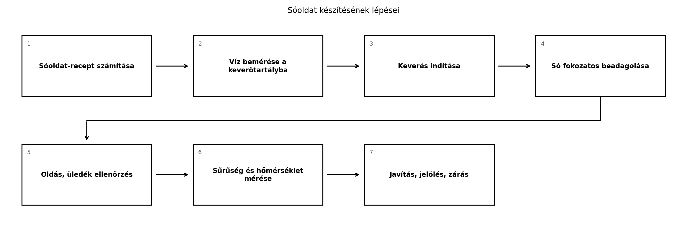

Egy hajnali dagasztásnál a pék a sóoldat-tartályból adagolja a sót. A tartályon nincs friss címke, a sűrűségmérő a mosogató mellett porosodik, a kolléga „szemre” engedi a sóoldatot a dagasztóba. Az egyik tétel kenyeréből sós, tömör bélű vekni lesz, a másikból szétterülő, gyorsan erjedő, íztelen termék. A só nem egyszerűen ízesítő: a tészta szerkezetét, az erjedés sebességét, a kéreg kialakulását és az eltarthatóságot is befolyásolja. Aki sóoldatot készít és adagol, annak pontosan kell tudnia, hány százalékos az oldat, mennyi vizet visz a tésztába, és hogyan ellenőrzi mindezt méréssel.
Egy sóoldat-készítő helyiségben a só zsákból a rozsdamentes keverőtartályba kerül, ivóvízzel oldjuk, majd a csapon át a dagasztógépbe adagoljuk. A folyamatot az alábbi ábra foglalja össze.

A tartályban a sóoldat töménysége nem látszik a szemünknek, ezért a fokolóval mért sűrűségből és a hőmérsékletből következtetünk rá. A leülepedett alsó réteg töményebb lehet, ezért a mintavétel helye is számít.
Definíció. Étkezési só alatt a sütőiparban elsősorban a nátrium-kloridot (NaCl) értjük, amely élelmiszer-minőségű, finomszemcsés, jól oldódó, kellemesen sós ízű anyag. A konyhasó lehet tengeri, kősó vagy bányászott só, de technológiai szempontból a tisztasága, szemcsemérete és oldhatósága a meghatározó.
Definíció. Sóoldat a nátrium-klorid ivóvízben készült, tiszta, üledékmentes oldata. A sütőiparban a sót gyakran előre elkészített sóoldatként adagoljuk, mert így gyorsabban oszlik el a tésztában, és nem maradnak sószemcsék.
Definíció. Töménység a sóoldatban az oldott só és az oldat tömegének aránya, tömegszázalékban kifejezve:
A sütőipari gyakorlatban 20–26 m/m%-os sóoldatokat használnak; ezek még jól keverhetők, szivattyúzhatók, és a só gyorsan oldódik. A laborgyakorlatban (Térfogatmérés, oldatok, sűrűségmérés és szűrés) hígabb oldatokkal dolgoztunk; az üzemi sóoldat jellemzően 20–26 m/m%-os, mert kis térfogatban sok sót visz (tanulási érték, ellenőrizendő: üzemi technológiai lap). A telített nátrium-klorid-oldat töménysége 20 °C-on körülbelül 26 m/m% (tanulási példa, a hőmérséklettől és a só tisztaságától függ, ellenőrizendő: analitikai táblázat).
Definíció. Sűrűség az oldat tömegének és térfogatának hányadosa:
ahol a tömeg kg-ban, a térfogat literben is megadható. A sóoldat sűrűsége a töménységgel nő, ezért fokolóval (sűrűségmérővel) gyorsan ellenőrizhetjük a töménységet. A leolvasott sűrűséget mindig a minta hőmérsékletével együtt értékeljük.
Előírás. Az étkezési sóra, a szennyezőanyag-határértékekre és a jódozott só jelölésére a Magyar Élelmiszerkönyv és az európai uniós élelmiszerjog vonatkozik. A pontos előírásszámot, a jódozás mértékét és a jelenlegi magyarországi szabályozást kiadás előtt ellenőrizni kell.
Minőségi jellemzők. A sütőipari étkezési só legyen fehér vagy enyhén szürkésfehér, folyós, csomómentes, idegen anyagtól és kellemetlen szagtól mentes. A nedvességtartalma alacsony legyen, mert a nedves só csomósodik, a mérlegen letapad, és az adagolócsőben dugulást okozhat. A csomósodást gátló anyagot tartalmazó só esetén a gyártói specifikációt és az adalékanyag-jelölést ellenőrizni kell.
Jódozás. A jódozott étkezési só a lakossági jódbevitel egyik hagyományos eszköze. A jódozott só a sütőiparban is használható, azonban a sütési hő hatására a jódtartalom egy része csökkenhet, ezért a kenyér nem tekinthető automatikusan jelentős jódforrásnak. A „jódozott só” megnevezést és a felhasznált jódvegyületet a hatályos jelölési előírás szerint kell feltüntetni (ellenőrizendő: Magyar Élelmiszerkönyv).
A só nem egyszerű ízesítő. A lisztre vetített sóadag jellemzően 1,5–2,5 m/m% között van; a kenyérféléknél gyakran 1,8–2,2%, a dúsabb péksüteményeknél 1,5–1,8%, de a mindenkori értéket a gyártmánylap rögzíti (tanulási példa, ellenőrizendő: üzemi technológiai lap).
Íz. A só kiemeli a többi ízanyagot, és a kenyérnek „testes” ízt ad. Só nélkül a búzakenyér üres, lisztízű, kellemetlenül lágy. A túlzott só viszont elnyomja az aromát, és fogyasztói panaszhoz vezet.
Sikérerősítés. A só a sikérfehérjék hidratációját és oldódását mérsékli, ezért a dagasztás elején kissé lassíthatja a tésztakialakulást. A kész tészta azonban rugalmasabb, feszesebb, kevésbé ragadós lesz, és az alakítás során jobban megtartja a formáját. Ezért a sót a gyakorlatban gyakran a dagasztás első szakasza után, oldatként adagoljuk.
Erjedésszabályozás. A só megemeli a tészta folyadékfázisának ozmotikus nyomását, vizet von el az élesztősejtektől, és mérsékli a gázképződést, valamint a kovászos tésztákban a savképződést is. Só nélkül a tészta gyorsan, de rendszertelenül erjed, és a végtermék szerkezete gyenge. A túlzott só ugyanakkor „megfojtja” az erjedést, a tészta sokáig kel, a bél tömör marad.
Héjszín és kéreg. A só a feszesebb tésztafelület kialakításán keresztül segíti a szép, egyenletes kérget, mert a vetés előtti bemetszés és a sütés eleji gőzölés hatása jobban érvényesül. A só közvetlen héjszín-módosító hatása kismértékű, ezért ha a héj halvány vagy túl sötét, először a kemence hőmérsékletét, a gőzölést és a tészta összetételét ellenőrizzük.
Eltarthatóság. A só kismértékben csökkenti a tészta vízaktivitását, lassítja a penészgombák és a nyúlósodást okozó baktériumok szaporodását, de önmagában nem helyettesíti a higiéniát, a savanyú kovászt, a hűtést vagy a tiszta tárolást.
Higiénia. A só alacsony vízaktivitása miatt mikroorganizmusok gyakorlatilag nem szaporodnak benne, de a sózsákot száraz, fedett helyen, élelmiszerektől elkülönítve tároljuk. A sóoldat-tartály fedett, jelölt, és a csapját tisztán tartjuk, hogy a tésztába ne kerüljön mechanikai vagy mikrobiológiai szennyeződés.
Ez nem ételrecept, hanem üzemi előkészítő eljárás, amely a biztonságos és megismételhető sóoldat-készítést szolgálja.
HACCP. A sóoldat-készítés ellenőrző pontja a töménység mérése, mert a hibás sóadag az erjedést, az ízt és az eltarthatóságot rontja. Idegenanyag-kockázat szempontjából az oldás utáni szűrés vagy a keverőtartály kiöntő nyílásánál elhelyezett szita a megelőzés. A sóoldat mikrobiológiai kockázata kicsi, de a fedetlen, piszkos tartály és az állott víz szennyező forrás lehet.
Gépbiztonság. A sóoldat-keverőt csak betanítás után, felügyelettel kezeljük. A tartályba nyúlni, a csomós sót kézzel szétnyomni vagy a keverőszárnyhoz nyúlni csak leállított, áramtalanított, újraindítás ellen biztosított gépen szabad. A tömény sóoldat szembe kerülve fájdalmas, ezért a minta leeresztésekor óvatosan, szükség szerint védőszemüvegben dolgozunk.
Allergén. A só önmagában nem tartozik az 1169/2011/EU rendelet szerinti kötelező allergén felsorolásba. Ha azonban a sót olyan üzemben tárolják, ahol allergén anyagok (például szezám, dió) pora kerülhet a sózsákra, a keresztszennyeződést a tárolás elkülönítésével kell megelőzni.
A sóoldat-készítéshez mindig az oldat tömegéből számolunk, nem az oldószer térfogatából.
1. példa – 80 kg 20 m/m%-os sóoldat készítése
Adott: az oldat tömege , töménység . Keresett: a só és a víz tömege.
Képlet:
Ellenőrzés: , és . Tehát 16 kg sót oldunk 64 kg vízben. ∎
2. példa – Sóoldat adagolása dagasztáshoz és a dagasztóvíz korrekciója
Adott: dagasztásonként a liszt tömege , a só lisztre vetített mennyisége , a sóoldat töménysége , a sóoldat sűrűsége , a tészta tésztakitermelése . Keresett: a szükséges só tömege, a sóoldat tömege, a sóoldat térfogata, a sóoldat víztartalma és a tiszta dagasztóvíz mennyisége.
A szükséges só tömege:
A szükséges sóoldat tömege:
A sóoldat térfogata:
A sóoldat víztartalma:
A tészta összes vízmennyisége a TA-ból:
A tiszta dagasztóvíz:
Ellenőrzés: a sóoldatban 1,0 kg só és 4,0 kg víz van, ami 20%-os; a tészta összes vize 26,0 + 4,0 = 30,0 kg; a TA = (50 + 30)/50 · 100 = 160. Ha a sóoldat vizét nem vonnánk le, a tészta túl lágy lenne. ∎
3. példa – 100 liter 20 m/m%-os sóoldat készítése sűrűségből
Adott: , , . Keresett: az oldat tömege, a só és a víz tömege.
Az oldat tömege:
A só tömege:
A víz tömege:
Figyelem. A gyakori hibás gyakorlat az, hogy „20 kg só + 80 liter víz = 100 liter sóoldat”. Ez nem pontos, mert a só hozzáadása növeli az oldat térfogatát is. A 100 liter 20%-os oldathoz fenti számítás szerint körülbelül 91,84 kg vizet kell bemérni, nem 80 litert. ∎
A táblázat kerekített, szemléltető tanulási adatokat tartalmaz 20 °C-ra. A pontos értékeket mindig az aktuális analitikai táblázatból vagy a gyártói adatlapból kell venni.
| Töménység (m/m%) | Sűrűség 20 °C-on (kg/l) | Só 100 l oldatban (kg) |
|---|---|---|
| 5 | 1,034 | 5,2 |
| 10 | 1,071 | 10,7 |
| 15 | 1,109 | 16,6 |
| 20 | 1,148 | 23,0 |
| 25 | 1,189 | 29,7 |
| 26 | 1,197 | 31,1 |
Megjegyzés. A sűrűség hőmérsékletfüggő. A melegebb oldat sűrűsége kisebb, ezért a fokolóval mért értékből csak hőmérséklet-korrekcióval vagy a hőmérsékletnek megfelelő táblázattal kapunk helyes töménységet. A sóoldat ellenőrzéséhez a mintát keverés után, a tartály közepéből vegyük; a csapból előbb engedjünk ki annyit, hogy a csőben lévő állott oldat távozzon.
A sütőipari termékek sótartalmának fokozatos csökkentése közegészségügyi cél, mert a hazai és európai lakosság napi sóbevitele jellemzően meghaladja az ajánlott, körülbelül 5 g-os értéket (ellenőrizendő: aktuális közegészségügyi ajánlás). A csökkentés azonban nem történhet korlátlanul, mert a só technológiai szerepe számottevő.
Lehetőségek.
Korlátok.
Egy pékségben hétfőnként a kenyerek rendszeresen túl sósak voltak, ugyanakkor a tésztájuk kissé alacsony, tömör bélű lett. A pék a sóoldatot 20%-osnak hitte, és a tartály csapjából engedte a dagasztóba. A hibakeresés során kiderült, hogy a sóoldatot feltöltés után nem keverték elég ideig, a só egy része az alsó rétegben kiülepedett, és a csapon éppen a töményebb réteget engedték le. A fokolóval a csapból vett minta sűrűsége 1,195 kg/l körül volt, ami a táblázat szerint közel telített, kb. 26 %-os oldatnak felel meg – a 20 %-osnak hitt oldat helyett. (Ha a fokoló 1,20 kg/l-nél többet mutat, az oldatban oldatlan só lebeg, vagy a minta hideg.) A helyesbítés az lett, hogy használat előtt a tartályt újra keverték, a csapból előleengedtek, a mintát a tartály közepéből vették, és a sóoldat víztartalmát levonták a dagasztóvízből. A hétfői kenyér sótartalma visszaállt a gyártmánylap szerinti értékre.
A kész sóoldat tiszta, szennyezőanyag-mentes, üledék nélküli folyadék. A mért sűrűség a tervezett töménységnek megfelel, legfeljebb ±0,005 kg/l eltéréssel (tanulási példa, az üzemi határt a technológiai utasítás rögzíti). A címkén szerepel a töménység, a készítés ideje és a készítő aláírása. A dagasztáskor a sóoldat mennyiségét mérlegen vagy hitelesített adagolóval ellenőrizzük, és a dagasztóvízbe beleszámoljuk.
Önellenőrzés – válaszok
1. feladat (A)
Add meg a sóoldat tömegszázalékos töménységének képletét, és mondd el,
mi a különbség az oldat tömege és az oldószer tömege között.
2. feladat (A)
Készíts 25 kg 20 m/m%-os sóoldatot. Mennyi sót és mennyi vizet mérj
be?
3. feladat (B)
Egy dagasztógép adagolója a sóoldatot térfogat alapján méri. A
gyártmánylap szerint a dagasztáshoz 80 kg liszthez 2,0% sót kell adni. A
sóoldat 20 m/m%-os, sűrűsége 1,148 kg/l. Mennyi sóoldat tömeget és
mekkora térfogatot kell beadagolni?
4. feladat (B)
A 3. feladat dagasztásánál a tészta TA-ja 165. Mennyi az összes víz, és
mennyi tiszta dagasztóvizet kell adni a sóoldat víztartalmának levonása
után?
5. feladat (C)
A tartályban 50 kg 26 m/m%-os sóoldat van, de a gyártáshoz 20%-os oldat
kell. Mennyi vizet kell hozzáadni, és mennyi lesz a hígított oldat
tömege? Ellenőrizd a só tömegével.
6. feladat (D)
A fokolóval mért sűrűség 1,189 kg/l 20 °C-on. A tartály címkéjén 20%-os
sóoldat szerepel, de a táblázat szerint a mért sűrűség körülbelül 25%-os
oldatra utal. Nevezd meg a lehetséges hibát, és írd le, hogyan javítanád
az oldatot, ha 100 kg 20%-os oldatot szeretnél kapni.
1. feladat (A)
A tömegszázalékos töménység:
.
Az oldat tömege a só és a víz együttes tömege; az oldószer tömege csak a
víz tömege. A képletben ezért a nevező az oldat tömege, nem az
oldószeré.
2. feladat (A)
;
.
3. feladat (B)
.
.
.
4. feladat (B)
.
A sóoldat víztartalma:
.
Tiszta dagasztóvíz:
.
5. feladat (C)
A só tömege a kiindulási oldatban:
.
A hígított oldat tömege:
.
Hozzáadandó víz:
.
Ellenőrzés:
.
6. feladat (D)
A címke hibás vagy a tartály tartalma töményebb, mint a címke szerint,
mert 20%-os oldat sűrűsége körülbelül 1,148 kg/l lenne. A mért 1,189
kg/l körülbelül 25%-os oldat. Ha 100 kg 20%-os oldatot szeretnénk, a
25%-os oldat sótartalmát kell kiszámítani: ha a tartályban lévő oldat
25%-os, akkor
.
A 100 kg 20%-os oldathoz
.
Szükséges 25%-os oldat tömege:
.
Ehhez
vizet kell hozzáadni. A tartály címkéjét javítani, és a keverés után
újra mérni kell.
Az étkezési só a sütőiparban nemcsak ízesítő, hanem technológiai anyag is. A só erősíti a sikérhálót, ezért a tészta rugalmasabb, kevésbé ragadós, jobban megtartja az alakját. A só egyúttal mérsékli az élesztő gázképződését és a kovászos tészták savképződését, ezáltal szabályozottabb, egyenletesebb erjedést ad. Hozzájárul a kellemes ízhez, a feszesebb kéreg kialakulásához és az eltarthatóság javulásához, de önmagában nem tartósítószer. A sót a gyakorlatban gyakran sóoldatként adagoljuk. Az oldat tömegszázalékos töménysége . A szükséges sóoldat tömege , térfogata pedig . A sóoldat víztartalmát mindig le kell vonni a dagasztóvízből. A sóoldatot fokolóval ellenőrizzük, a hőmérsékletet is feljegyezve. A sócsökkentés fokozatosan lehetséges, de az erjedésszabályozás, a tésztastabilitás és az íz miatt korlátos. Továbbvitt eredmény. A sóoldat-számítást használjuk a dagasztásonkénti anyagmennyiség meghatározásánál (Anyagnorma, rendelésből anyagszükséglet és dagasztásonkénti anyagmennyiség), a sóoldatot előkészítő berendezéseknél (Mérlegek, adagolók és a víz-, só- és élesztő-előkészítő berendezések), a só vizsgálatánál (Élesztő-, sóoldat- és tojásvizsgálat), és az alapanyagok előkészítő műveleteinél (Nyersanyagok előkészítő műveletei).
A fejezet az általános élelmiszerkémiai és sütőipari technológiai ismeretekre épül. Kiadás előtt ellenőrizni kell: az étkezési sóra és a jódozott sóra vonatkozó hatályos magyar és európai uniós előírásokat, a Magyar Élelmiszerkönyv sóra és kenyérre vonatkozó részeit, a sóoldat sűrűség–töménység táblázat pontos értékeit 20 °C-on, az üzemi sóoldat-töménység és adagolási határokat, valamint a sütőipari sócsökkentésre vonatkozó aktuális ágazati ajánlásokat.